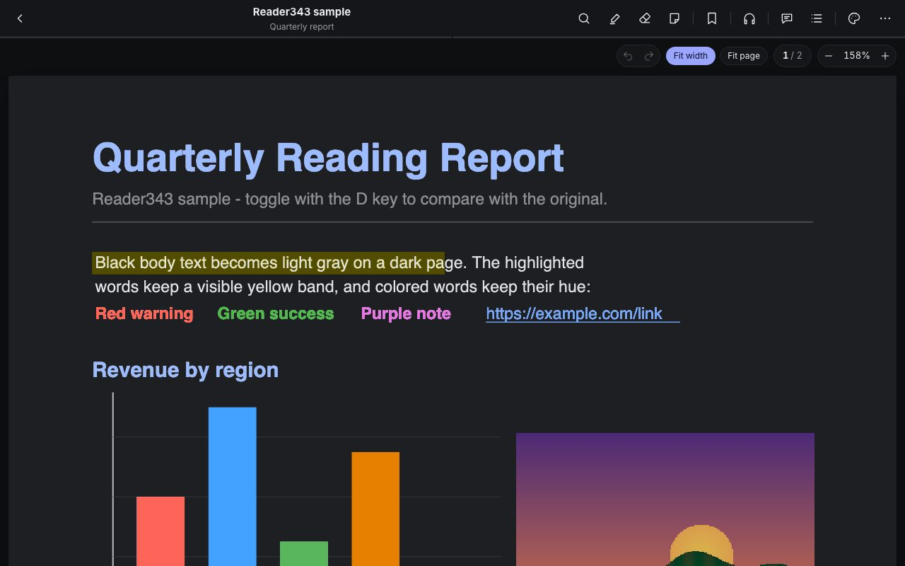
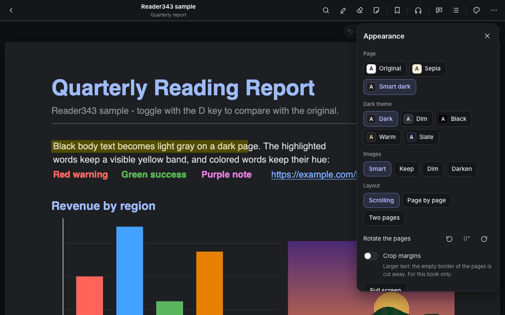
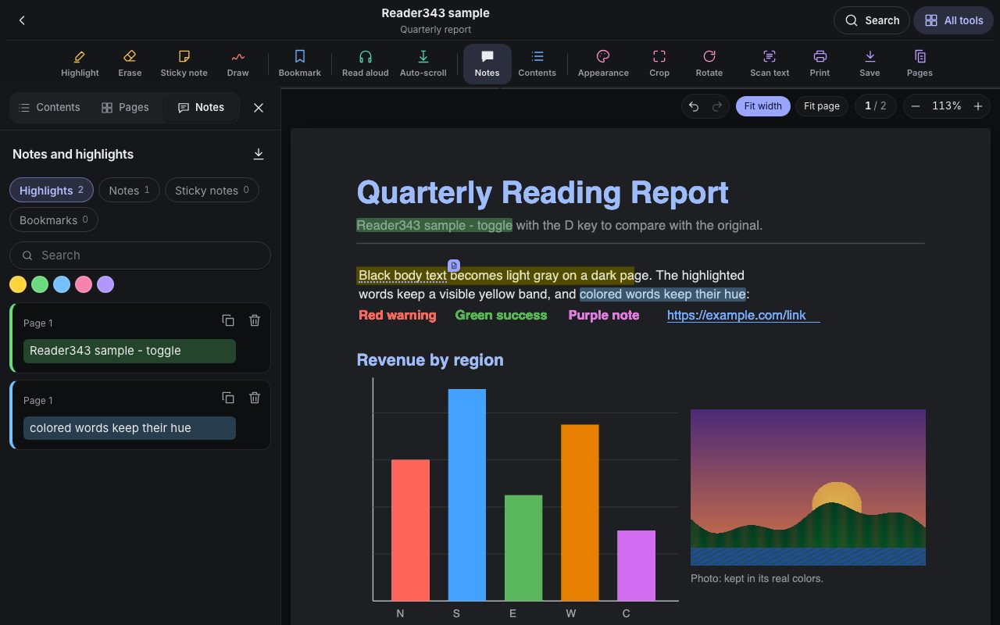
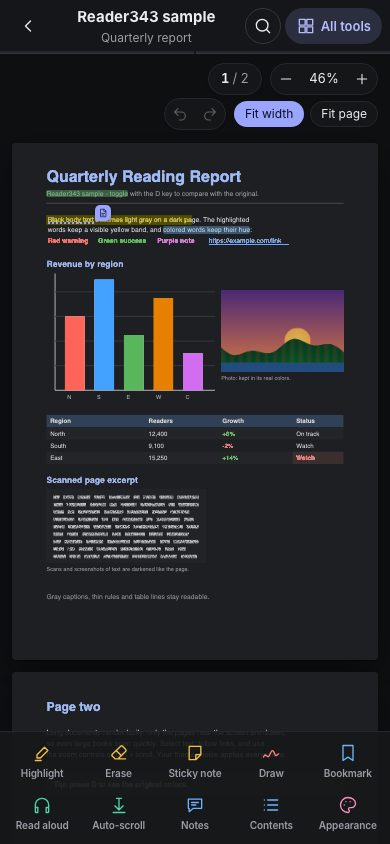
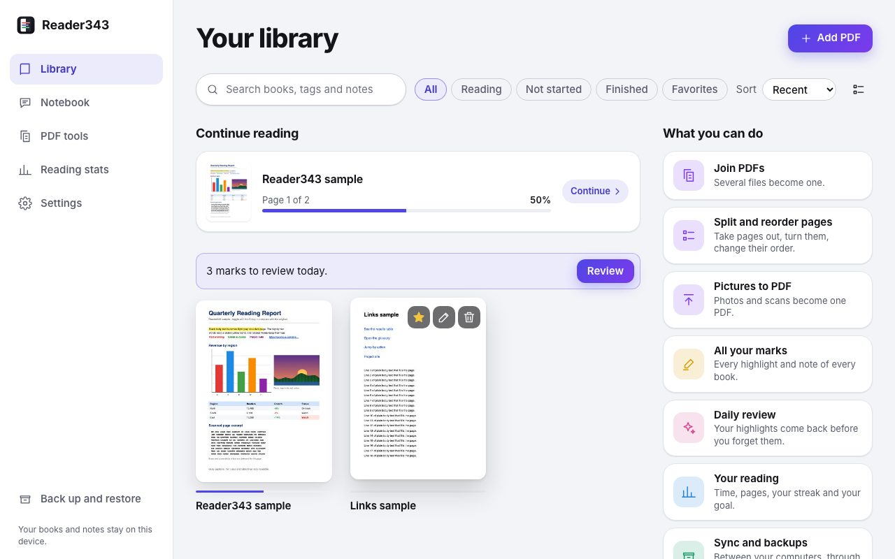

In your browser
Works in Chrome, Edge, Safari and Firefox, and keeps working offline after the first visit.
Open the appReader343 turns the pages of a PDF dark and leaves photos, charts and colored text as they are. Mark what matters, listen to the book, and find anything again. Your books and notes stay on your device.
Free and open source. No account.

Most dark modes turn a photo into its negative and a red warning into cyan. Reader343 darkens the paper and the text and leaves the rest alone.

Select text and pick a color. Turn a highlight into an underline or a strikethrough, write a note on a passage, or drop a sticky note anywhere on the page.

On a computer, natural voices read the text and the page follows along. They run on your machine; the text is not sent anywhere. On an iPhone the best voice of the device is used.

The library opens with the books you are reading, each at its page. Tags and a star keep the rest in order, and one search looks through titles, your notes and the text of every book.

Reader343 has no account and no cloud. The app is a page your browser keeps, and your books live in your browser's storage on your device.
Works in Chrome, Edge, Safari and Firefox, and keeps working offline after the first visit.
Open the appOpen the app in Safari, tap Share, then Add to Home Screen. It opens full screen like any other app.
Open in SafariA desktop app that opens PDFs from your files with a double click.
DownloadOpens every PDF link in smart dark. It is not in the Chrome Web Store yet; for now it can be loaded from the source.
How to load it